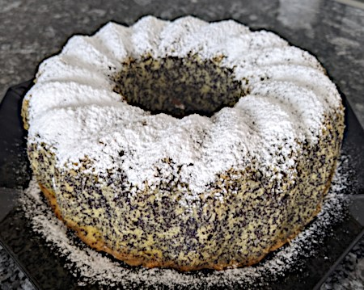

| Zutaten für 4 Personen: | |
| 150g | Mohnsamen |
| 220g | Butter oder Margarine |
| 170g | Zucker |
| 1/2 | Zitrone, Saft von |
| 6 | Eier |
| 100g | Weizenmehl |
| 2 gestr. TL | Backpulver |
| 100g | Kokosraspel |
| 1 | Gugelhopfform 1 l |
| Puderzucker | |
Eine Gugelhupfform (22 oder 24 cm Durchmesser) fetten und mit Mehl bestäuben.
Weiche Butter mit dem Zucker cremig rühren. Saft von 1/2 Zitrone unterrühren. Nach und nach die Eier einzeln unterrühren. (Dabei jedes Ei mindestens 1/2 Minute schlagen).
Mehl, Backpulver, Mohn und Kokosraspel in einer Schüssel mischen und unter die Butter-Eier Masse mischen.
Den Teig in die vorbereitete Gugelhupfform füllen.
Im vorgeheizten Backofen ca. 40 Minuten bei 180°C, Ober- Unterhitze backen. (Die Garprobe mit einem Holzspiess machen. Der Kuchen ist fertig, wenn beim Hineinstechen keine Teigreste am Holz kleben bleiben).
Den Kuchen aus dem Backofen nehmen, etwa 10 Minuten in der Form stehen lassen, dann aus der Form stürzen und auf einem Kuchenrost erkalten lassen.
Den Kuchen mit dem Puderzucker bestäuben
backen-mit-spass.de/rezepte/kuchen-und-torten/372-mohn-kokos-gugelhupf
Original: Dieses Rezept stammt aus dem Buch: "Wyśmienite ciasta i ciasteczka".
Gelang im April 2023 ganz gut. RE
@LINKBACK_TAG@ @WAKELOCK@